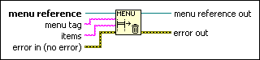

Delete Menu Items Function
Owning Palette: Menu Functions
Requires: Base Development System
Deletes menu items from the menu or a submenu within the menu.
(Real-Time Module) You cannot use this function in VIs that run on RT targets.

 Add to the block diagram Add to the block diagram |
 Find on the palette Find on the palette |